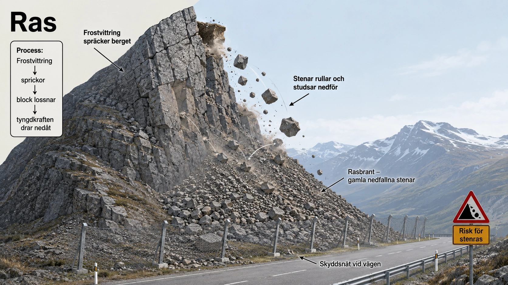
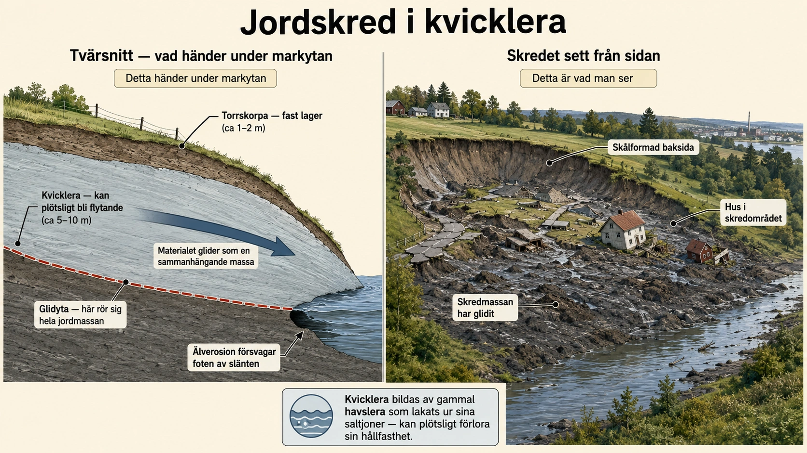
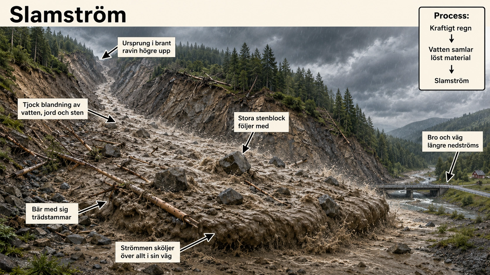
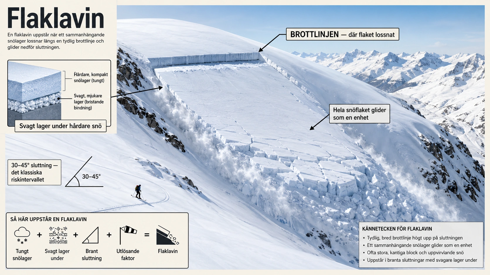

Sluttningsprocesser
— ras, jordskred, slamströmmar och laviner —
Vad är en sluttningsprocess?
I avsnitt 6 såg vi hur vatten, vind och is kan transportera material över stora avstånd. Men det finns en kraft till som ständigt formar landskapet — och som inte behöver vatten, vind eller is alls. Det är tyngdkraften. Den drar oavbrutet allt nedåt, dygnet runt, året runt, i miljontals år.
När material rör sig nedför en sluttning på grund av tyngdkraften kallas det en sluttningsprocess. Det kan vara sten, jord, lera, sand, grus, snö eller is som förflyttas från en högre plats till en lägre. Sluttningsprocesser sker överallt där marken lutar — i berg, längs kuster, i raviner, i fjällområden, längs vägar, vid floder.
Ibland sker rörelsen långsamt under lång tid. Markens översta lager kan krypa nedåt en millimeter per år utan att någon märker det. Men ibland sker den mycket snabbt — och då kan sluttningsprocesser bli farliga för människor, byggnader, vägar och järnvägar.
Fyra olika sluttningsprocesser
Det finns flera olika sorters sluttningsprocesser. De viktigaste är fyra, och vi går igenom dem en i taget i detta avsnitt:
- Ras — när sten eller jord faller eller rullar nedför en brant sluttning (denna underdel)
- Jordskred — när stora massor av jord eller lera glider iväg längs en glidyta (7B)
- Slamström — när vatten blandas med jord, lera, sand och sten och rinner som en tjock, snabb massa (7C)
- Lavin — när snö eller is rasar nedför en fjällsida eller brant sluttning (7D)
Vad som avgör vilken sluttningsprocess som sker är framför allt fyra saker: vilken sorts material som finns i sluttningen, hur brant sluttningen är, hur mycket vatten som finns i marken, och om något stör markens stabilitet.
Ras — sten i fritt fall
Ett ras innebär att material lossnar och faller, rullar eller studsar nedför en sluttning. Ras sker ofta där sluttningen är brant — vid bergväggar, klippor, raviner, vägskärningar eller fjällsidor.
Ras består vanligen av stenblock, grus eller jord. Om det är berg som lossnar talar man ofta om bergras eller stenras. Om lös jord eller sand rasar nedför en sluttning kan man tala om jordras. Det viktiga är att materialet rör sig som lösa partiklar — varje sten har sitt eget liv när det faller, till skillnad från ett jordskred där hela massan rör sig som en enhet.

Varför uppstår ras?
Ras uppstår när materialet i en sluttning inte längre hålls kvar. Det kan bero på flera saker som ofta verkar tillsammans.
En viktig orsak är vittring — som vi såg i avsnitt 5. När berg spricker sönder genom frostvittring kan stenar och block lossna. Vatten tränger in i sprickor i berget. När vattnet fryser till is utvidgas det och pressar isär sprickorna. Efter många omgångar av frysning och upptining kan delar av berget lossna och falla. I svenska fjäll, där frostvittring är mycket aktiv, är detta den huvudsakliga orsaken till ras.
En annan orsak är erosion. Om vatten, vågor eller en flod gröper ur nederdelen av en sluttning kan hela sluttningen bli instabil. Då får materialet ovanför mindre stöd och kan rasa. Detta är ofta hur kustklippor förlorar material — vågorna eroderar foten, och resten faller efter.
Ras kan också utlösas av kraftigt regn, eftersom vatten kan göra jorden tyngre och minska friktionen mellan olika lager. Även jordbävningar, vibrationer från trafik eller sprängningar kan få löst material att börja röra sig. Vid stora jordbävningar i bergsområden är ras en av de farligaste sekundära effekterna.
Människan kan också öka risken för ras. När man bygger vägar genom berg, gräver i sluttningar eller tar bort växtlighet kan sluttningen bli mindre stabil. Rötter från växter hjälper annars till att hålla kvar jord och mindre stenar — när de försvinner blir marken sårbar.
När ras möter samhället
Ras kan få stora konsekvenser. Stenblock kan falla ned på vägar, järnvägar, hus eller människor. Mindre ras kan blockera en väg under några timmar, medan större ras kan förstöra byggnader och hela infrastruktursystem. I bergsområden kan ras vara mycket farliga eftersom blocken kan få hög fart när de faller — ett stenblock som rullat nedför en sluttning på 100 meter kan nå hastigheter över 80 km/h.
Längs vägar genom berg och branta sluttningar används därför ofta skyddsnät, stenrasspjäll, murar eller stängsel som ska fånga upp sten innan den når vägen. På särskilt utsatta platser sätter man upp varningssystem som ger signal när en sten lossnat. I Norge — där bergiga vägar är vanliga — är hela kuststräckor mellan Trondheim och Bodø utrustade med sådana skyddssystem.
Sammanfattningsvis är ras en sluttningsprocess där tyngdkraften snabbt för material nedför en brant sluttning. Risken ökar när berg eller jord har försvagats av vittring, erosion, vatten eller mänskliga ingrepp. I nästa underdel går vi vidare till jordskred — där rörelsen är annorlunda och materialet kan vara ännu mer farligt för bebyggelse.
Vad är en sluttningsprocess?
- Sluttningsprocess = material rör sig nedför en sluttning
- Drivs av tyngdkraften, som drar allt nedåt
- Material kan vara sten, jord, lera, sand, snö eller is
- Sker överallt där marken lutar
Tyngdkraften drar oavbrutet allt material nedåt. När material faktiskt rör sig nedför en sluttning på grund av tyngdkraften kallas det en sluttningsprocess.
Sluttningsprocesser sker överallt där marken lutar — i berg, vid kuster, i raviner, längs vägar. Ibland sker rörelsen långsamt, ibland mycket snabbt — och då kan de bli farliga.
Fyra olika sluttningsprocesser
- Ras — sten eller jord faller nedför en brant sluttning (denna underdel)
- Jordskred — jord eller lera glider iväg som en sammanhängande massa (7B)
- Slamström — vatten blandas med jord och sten och rinner som tjock massa (7C)
- Lavin — snö eller is rasar nedför en sluttning (7D)
Det finns fyra viktiga sluttningsprocesser, och vi går igenom dem en i taget. Vad som avgör vilken process som sker är vilket material som finns, hur brant det är, hur mycket vatten det finns, och om något stör marken.
Ras — sten i fritt fall
- Ett ras = sten lossnar och faller nedför en sluttning
- Sker vid branta klippor, vägskärningar, fjällsidor
- Stenarna rör sig som lösa partiklar — varje sten åker själv
- Vid foten samlas materialet i ett rasbrant
Ett ras innebär att material lossnar och faller, rullar eller studsar nedför en sluttning. Det kan vara stenblock, grus eller jord. Det viktiga är att materialet rör sig som lösa partiklar — varje sten har sitt eget liv när det faller.
Lägg märke till:
- Sprickor i berget — där frostvittring försvagat berget
- Stenar i rörelse nedför sluttningen
- Rasbrant — konformig hög av tidigare fallna stenar
- Skyddsnät vid vägen — mänsklig lösning
Fundera: Varför rasar berg trots att de verkar fasta?
Varför uppstår ras?
- Frostvittring — vatten i sprickor fryser och pressar isär berget
- Erosion vid foten av sluttningen tar bort stöd
- Kraftigt regn gör jorden tyngre, minskar friktionen
- Jordbävningar och vibrationer kan utlösa ras
- Människan ökar risken vid vägbygge, avskogning, sprängningar
Ras uppstår när materialet i en sluttning inte längre hålls kvar. Det kan bero på flera saker som verkar tillsammans:
- Frostvittring spräcker berget — vatten tränger in, fryser, pressar isär sprickorna
- Erosion vid foten — när vatten eller vågor gröper ur stödet under
- Kraftigt regn — vatten gör jorden tyngre och minskar friktionen
- Jordbävningar eller vibrationer — kan få löst material att börja röra sig
- Människans påverkan — vägbygge, avverkning, sprängningar försvagar sluttningar
När ras möter samhället
- Stenblock kan falla på vägar, järnvägar, hus och människor
- Stenar i fall kan nå över 80 km/h
- Skydd: skyddsnät, stenrasspjäll, varningssystem
- I Norge är hela vägsträckor utrustade med rasskydd
Ras kan få stora konsekvenser. Stenblock kan falla på vägar, järnvägar och hus. I bergsområden kan blocken få mycket hög fart. Längs vägar genom berg används skyddsnät, stenrasspjäll och varningssystem som ska fånga upp stenar innan de når trafiken.
Sammanfattning
- Ras = sten i fritt fall nedför brant sluttning
- Orsaker: vittring, erosion, regn, jordbävning, människan
- Konsekvenser: skadade vägar, hus, människor
- Skydd: skyddsnät, stenrasspjäll, varningssystem
Ett ras är en sluttningsprocess där tyngdkraften snabbt för material nedför en brant sluttning. Risken ökar när berg eller jord har försvagats av olika faktorer. I nästa underdel går vi vidare till jordskred — där rörelsen är annorlunda.
Frostvittringens kontor i Skanderna
Om någon skulle peka ut platsen i Sverige där frostvittring är som mest produktiv, skulle det vara svenska fjällen. Här arbetar en av jordens långsammaste men mest pålitliga geologiska maskiner dygnet runt. Resultatet är en av världens mest ras-aktiva miljöer — och en av anledningarna till att svenska fjällvägar är så komplicerade att bygga och underhålla.
För att förstå varför, behöver vi titta på temperaturkurvorna. I svenska fjällen pendlar temperaturen kring fryspunkten mycket ofta — särskilt under höst och vår. Varje gång temperaturen passerar 0°C kan vatten som finns i en spricka i berget övergå mellan vätska och is. Och här är fysiken som är avgörande: när vatten fryser till is **utvidgas det med cirka 9%**. Det betyder att om vatten är instängt i en spricka och fryser, måste sprickan vidgas — annars sprängs berget runt om. Och berg är inte oändligt starkt. Det spricker.
I tropiska miljöer som Sahara händer detta nästan aldrig — temperaturen där pendlar inte över fryspunkten särskilt ofta. I arktiska miljöer som Grönlands inland är det också relativt sällsynt — temperaturen ligger oftast långt under noll, så inget vatten finns i flytande form i sprickorna. Men i **svenska fjällen**, där temperaturen passerar 0°C kanske 50-100 gånger per år, är förhållandena perfekta för konstant frostvittring.
Resultatet syns överallt om man tittar. Skanderna är fulla av rasbranter — stora koniska högar av frostvittrat material vid foten av fjällsluttningar. Under tusentals år har dessa kon-formationer byggts upp av miljontals små frostsprängningar. På vissa platser är rasbrantet tjockare än 50 meter — alltså 50 meter sten som lossnat och fallit, lager för lager, sten för sten.
Ett klassiskt svenskt exempel är Nuoljas branta sidor i Abisko nationalpark. Här rasar berg så ofta att området är permanent avstängt för vandrare. Ett annat exempel är fjällsidorna kring Kebnekaise — Sveriges högsta berg — där rasbranter och kontinuerlig vittring formar landskapet. Och alla som kört E10 från Kiruna till Narvik har sett skyddsnäten längs vägen — de är installerade just för att frostvittringen i sluttningarna ovanför aldrig stannar.
Klimatförändringen påverkar också detta. När temperaturen i fjällen blir mer instabil — fler frys-tö-cykler under en säsong — ökar frostvittringen i intensitet. Vissa fjällsidor som varit stabila i hundra år börjar plötsligt rasa. I Alperna och norska fjällen är detta redan ett växande problem. Svenska fjällen följer efter. En sluttningsprocess som verkar urgammal är alltså samtidigt en aktuell följd av dagens klimat.
Hur människor skyddar sig mot ras
I många länder är ras ett återkommande hot mot vägar, järnvägar och bebyggelse. Det har lett till utvecklingen av en hel ingenjörskonst kring rasförebyggande — något som de flesta människor passerar varje dag utan att tänka på det.
Den enklaste och vanligaste lösningen är skyddsnät. Det är stora nät av stålvajer som hängs från sluttningens topp ner till vägen. När en sten lossnar och faller fångas den upp av nätet innan den når trafiken. Skyddsnät är pålitliga och relativt billiga, men de fungerar bara mot mindre stenar — stora block kan riva ner näten.
För större risker använder ingenjörer bergbultar. Det är meterlånga stålstänger som borras in i berget och sedan låses fast med betong. De håller fast lösa block i deras ursprungsläge så att de inte kan falla. På en utsatt bergvägg kan det finnas hundratals bergbultar — fast oftast osynliga, för stängerna sticks in och pluggas ner med betong.
Vid särskilt farliga platser byggs stenrasspjäll — som är låga, breda vallar eller diken vid sidan av vägen. Spjället fångar upp stenar som lyckats undgå skyddsnäten innan de når själva vägbanan. Det är en sista försvarslinje.
I bergstunnlar — som de många tunnlarna i Norge eller den långa Glömminge-tunneln på Öland — kombineras alla dessa metoder med tunnelportaler som leder vägen genom själva berget istället för utanför det. Norges kustriksvägen har över 1 200 tunnlar — många byggda just för att skydda mot ras längs den klippiga västkusten.
I framtiden kommer dessutom varningssystem med sensorer bli vanligare. Små rörelsemätare placeras på utsatta bergpartier, och om partiet börjar röra sig — vilket sker innan ett verkligt ras — får trafikmyndigheter ett larm. Det ger tid att stänga vägen innan stenen faktiskt faller. I Schweiz och Italien används sådana system redan på vissa platser. Den svenska Trafikverket testar liknande lösningar i fjällkommunerna.
Allt detta är dyrt och tidskrävande, men nödvändigt. När man kör genom en svensk fjälldal eller en norsk fjordväg och ser skyddsnäten och de små brunmålade tunnelmunningarna, ser man också resultaten av kontinuerligt arbete för att leva med en sluttningsprocess som aldrig stannar. Tyngdkraften vilar aldrig. Människor som vill bo och färdas i bergsområden måste vila ännu mindre.
Jordskred — när jorden själv vandrar
Ett jordskred är när en stor mängd jord, lera eller annat löst material börjar glida nedför en sluttning. Det är en av de mest dramatiska sluttningsprocesserna — för även om enstaka stenar kan rasa farligt, är ett jordskred något helt annat. Här rör sig hela landskap.
Till skillnad från ett ras, där material faller, rullar eller studsar som lösa partiklar, rör sig materialet i ett skred mer som en sammanhängande massa. Det glider längs en svag yta i marken — en så kallad glidyta. Ovanför glidytan rör sig allt. Under den är marken stilla. Det är precis som om en geléhalv glider av en lutande tallrik — det är inte gelén som faller isär utan hela klumpen som flyttar sig.
Jordskred sker ofta i områden med lera, särskilt där marken lutar mot en älv, sjö, kust eller ravin. I Sverige är jordskred vanliga i vissa lerområden — framför allt i Västsverige och längs älvdalar. Vi tittar närmare på Sveriges historia av skredkatastrofer i en av djupdykningarna efter avsnittet.

Varför uppstår jordskred?
Ett jordskred uppstår när marken inte längre orkar hålla emot tyngdkraften. Då börjar jordmassan glida iväg. Det finns flera viktiga orsaker som ofta samverkar.
En vanlig orsak är att marken innehåller mycket vatten. När det regnar kraftigt eller när snö smälter kan vatten tränga ner i jorden. Vattnet fyller hålrummen mellan jordpartiklarna. Då blir marken tyngre, samtidigt som friktionen mellan partiklarna minskar. Jordpartiklarna håller inte ihop lika bra, och sluttningen kan börja glida. Det är därför många skred sker just efter perioder av kraftigt regn eller snösmältning.
En annan viktig orsak är erosion vid foten av sluttningen. Om en älv eller ett vattendrag nöter bort material längst ner i en slänt, försvinner stödet för marken ovanför. Då kan hela jordmassan ovanför börja röra sig. Detta är den klassiska utlösaren längs Göta älv i Västsverige — älven har eroderat in i sina stränder i tusentals år, och då och då blir slänterna så instabila att de glider.
Jordskred kan också orsakas av människans påverkan. Om man bygger hus, vägar eller andra tunga konstruktioner på en känslig sluttning ökar belastningen på marken. Om man dessutom gräver bort material längst ner i sluttningen — eller fyller upp mark högt upp — kan stabiliteten försämras ännu mer. Det är därför geotekniska undersökningar är så viktiga innan man bygger i lerområden.
Kvicklera — när fast jord plötsligt blir flytande
I vissa områden i Sverige finns en särskilt farlig sorts lera — kvicklera. Kvicklera ser ut som vanlig fast lera. Den känns fast. Den kan bära byggnader och vägar utan problem. Men om den störs tillräckligt mycket — av vibrationer, av plötslig belastning eller bara av rätt sorts störning — kan den plötsligt förlora sin hållfasthet och bli nästan flytande.
Det låter som en geologisk magitrick, men det är fysik. Kvicklera bildades efter istiden, när lerpartiklar avsattes på havsbottnar i salt vatten. Saltjonerna fungerade som kemiska "lim" mellan partiklarna och höll dem i en stabil struktur — som ett korthus. När landet senare höjde sig och regnvatten gradvis lakade ur saltet, behöll leran sin form men förlorade limmet som höll partiklarna på plats. Strukturen står kvar — men nu balanserar den på något som kan kollapsa när som helst.
När kvickleran störs kollapsar strukturen. Vatten som suttit fast i mikroskopiska hålrum frigörs plötsligt, och leran beter sig nästan som en tjock vätska. Då kan mycket stora skred ske mycket snabbt. Marken kan glida iväg hundra meter på några minuter. För människor som bor ovanpå är det förödande.
När jordskred möter samhället
Jordskred kan vara mycket farliga eftersom stora markområden kan flytta sig på kort tid. Hus, vägar, järnvägar, broar, elledningar och vattenledningar kan förstöras på minuter. Om skredet sker nära ett vattendrag kan jordmassor hamna i vattnet och skapa översvämningar eller tillfälliga stopp i vattenflödet — som kan ge ytterligare katastrofer nedströms.
För människor är jordskred särskilt farliga eftersom marken under hus och vägar kan försvinna. Ett område som tidigare såg helt stabilt ut kan på en eftermiddag bli omöjligt att använda. Och eftersom kvickleran kan kollapsa plötsligt finns ofta lite tid att fly.
Jordskred kan också förändra landskapet permanent. Sluttningar kan få nya former, vattendrag kan ändra riktning och stora "sår" kan bildas i marken. Sverige har en lång och tragisk historia av jordskredskatastrofer — Getå 1918, Surte 1950, Tuve 1977, Stenungsund 2023 — som tillsammans ger en bild av hur farliga lerområden kan vara när naturen och samhället möts. Det är därför det är så viktigt att undersöka marken noggrant innan man bygger i områden med lera eller branta sluttningar.
I nästa underdel går vi vidare till slamström — där samma material som i ett jordskred (jord och lera) blandas med vatten på ett ännu mer dramatiskt sätt.
Jordskred — när jorden själv vandrar
- Ett jordskred = stor mängd jord eller lera glider iväg
- Materialet rör sig som en sammanhängande massa
- Det glider längs en glidyta — en svag yta i marken
- Vanligt i lerområden, särskilt nära älvar och kuster
Till skillnad från ett ras, där lösa stenar faller, rör sig ett jordskred som en sammanhängande massa. Hela jordmassan glider längs en svag yta i marken — en glidyta. Ovanför rör sig allt, under är det stilla.
I Sverige är jordskred vanliga i lerområden, framför allt i Västsverige och längs älvdalar. En djupdykning efter avsnittet berättar om Sveriges historia av skredkatastrofer.
Lägg märke till två paneler:
- Vänster (tvärsnitt): Torrskorpa ovanpå, kvicklera under, glidytan markerad med rött
- Älverosion vid foten — vanlig utlösare
- Höger (sidvy): Skålformad baksida, glidande skredmassa, förskjutna hus
Fundera: Varför glider hela massan istället för att falla i bitar?
Varför uppstår jordskred?
- Mycket vatten i marken — gör jorden tyngre + minskar friktion
- Erosion vid foten — älv eller bäck tar bort stödet
- Människans påverkan — tunga byggnader, schaktning, fyllnadsmassor
- Kvicklera — kan plötsligt förlora hållfastheten
Ett jordskred uppstår när marken inte längre orkar hålla emot tyngdkraften. Flera orsaker samverkar ofta:
- Vatten i jorden — efter kraftigt regn eller snösmältning blir jorden tyngre och friktionen minskar
- Erosion vid foten — när en älv eroderar i nedre delen av en slänt försvinner stödet
- Människans påverkan — tunga byggnader, schaktning eller fyllnadsmassor kan utlösa skred
Kvicklera — när fast jord blir flytande
- Kvicklera verkar fast men kan plötsligt kollapsa
- Bildades av havslera efter istiden
- Saltjoner som höll ihop leran har lakats ur
- Vid störning blir leran nästan flytande
I vissa svenska områden finns kvicklera — en särskilt farlig sorts lera. Den ser ut och känns som vanlig fast lera, men om den störs kan den plötsligt förlora sin hållfasthet och bli nästan flytande.
Kvicklera bildades efter istiden. Lerpartiklar avsattes på havsbottnar, och saltjoner höll ihop dem som kemiskt lim. När landet sedan höjde sig och regnvatten lakade ur saltet, behöll leran sin form men förlorade limmet. Strukturen står kvar — men kan kollapsa när som helst.
När jordskred möter samhället
- Stora markområden kan flytta sig på några minuter
- Hus, vägar, broar och ledningar kan förstöras
- Sverige har drabbats: Getå 1918, Surte 1950, Tuve 1977, Stenungsund 2023
- Geotekniska undersökningar viktiga innan bygge
Jordskred kan vara mycket farliga eftersom stora områden kan flytta sig på kort tid. Hus, vägar och ledningar kan förstöras på minuter. Sverige har en lång historia av skredkatastrofer — vi tittar närmare på dem i en djupdykning efter avsnittet.
Sammanfattning
- Jordskred = sammanhängande jordmassa glider på en glidyta
- Orsaker: vatten, älverosion, mänskliga ingrepp
- Kvicklera är särskilt farligt — kan kollapsa plötsligt
- Sverige har många skredkänsliga områden
Ett jordskred är en sluttningsprocess där jord eller lera glider iväg eftersom marken har blivit instabil. I nästa underdel går vi vidare till slamströmmar — där samma material som i ett skred blandas med vatten.
Kvicklera — kemins märkligaste lera
Av alla geologiska fenomen i Sverige är kvicklera kanske det mest motsägelsefulla. Den känns fast under fötterna. Den ser ut som vanlig grå lera. Den kan bära ett hus i 50 år. Och sedan, plötsligt, på några minuter eller till och med sekunder, kan den kollapsa och bli nästan som vatten. Det är som om geologin spelar ett trick på dig — och det är fysiken bakom som är det fascinerande.
För att förstå kvicklera behöver vi gå tillbaka till tiden efter istiden. För 10 000-15 000 år sedan var stora delar av västra Sverige under vatten — Bohuslän, Västergötland och delar av Värmland låg under en gammal version av Östersjön eller Yoldiahavet. Floder som rann ner i havet förde med sig mycket finkorniga lerpartiklar. Dessa partiklar var så små att de bara sjönk långsamt. I det salta vattnet hände något viktigt: saltjoner (natrium- och kloridjoner) lade sig mellan partiklarna och fungerade som kemiska bryggor. De höll partiklarna i en lös men stabil struktur — som ett tredimensionellt korthus eller en mycket porös svamp.
Sedan höjde landet sig. Under tusentals år gick havsbottnar gradvis upp ovanför havsnivån. Nu låg leran på torra land — men strukturen var fortfarande den samma porösa svampen som bildats under vatten. Och nu började nästa fas: regnvatten började gradvis lakas igenom leran. Och regnvatten har ingen salt. Det är sött. Det löste upp saltjonerna i leran och bar bort dem.
Efter några tusen år av sådan urlakning var leran i en mycket märklig situation. Strukturen — det porösa korthuset — fanns kvar. Men limmet som hade hållit ihop strukturen var borta. Det enda som höll strukturen var nu friktionen mellan partiklarna och vattnet som satt instängt mellan dem. Lera i detta tillstånd är vad vi kallar kvicklera.
Så länge kvickleran lämnas i fred är allt bra. Den känns fast. Den bär byggnader. Men om strukturen störs — av vibrationer, av plötslig belastning, av jordbävning eller bara av att någon gräver i fel ställe — kan korthuset kollapsa. När det sker frigörs allt vattnet som satt instängt mellan partiklarna. Plötsligt har vi inte längre ett fast material utan en suspension av lerpartiklar i vatten — något som beter sig nästan som en tjock vätska. Det är detta tillstånd som ger kvicklera dess namn: leran blir snabb, levande, rörlig.
Det märkliga är att den här processen är reversibel. Om kvickleran får ligga ostörd igen, kan partiklarna långsamt sätta sig och leran kan återgå till att verka fast. Men strukturen är aldrig riktigt densamma — och om något liknande händer igen, kan det kollapsa snabbare än första gången.
Kvicklera finns inte överallt i världen. Den kräver en mycket specifik historia: avlagring i salt vatten, följt av landhöjning, följt av urlakning. I Sverige är det främst Bohuslän, Västergötland och delar av Mälardalen som har kvicklerelager. I Norge finns det också mycket kvicklera kring Trondheim och Oslofjorden. Kanada har det i Saint Lawrence-dalen i Quebec. Tre länder, samma fysik — alla områden där havet drog sig tillbaka efter istiden och regnvatten sedan lakade ur leran i tusentals år.
För modern stadsplanering i Sverige har detta enorma konsekvenser. Innan man bygger ett hus eller en väg i västsverige måste man göra geotekniska undersökningar som testar om det finns kvicklera under marken. Om det finns måste man antingen flytta projektet eller använda speciella tekniker — pålning ner till stabil grund, undvikande av tunga laster, försiktighet med schaktning. Det är dyrt men nödvändigt.
Och i botten av allt detta finns en sak att fundera över. Det är geologin från istiden — landhöjningen, det gamla havet, lerpartiklarna — som fortfarande påverkar var och hur vi kan bygga idag, 10 000 år efter att isen försvunnit. Det förflutna är inte borta. Det är bara begravt.
Att läsa landskapet — hur man känner igen ett skredområde
Inte alla områden är lika utsatta för jordskred. Geologer och geotekniker har under många decennier lärt sig att läsa landskapet för tecken på skredrisk — och vissa av dessa tecken kan vem som helst lära sig se. Det är inte exakt vetenskap, men det ger en första uppfattning om vilka områden som kräver extra försiktighet.
Det första tecknet är topografin. Skred kräver lutning. Helt platta områden får sällan skred. Mycket branta områden (över 40-45 grader) tenderar att få ras istället för skred, eftersom material i sådana sluttningar oftast är sten snarare än jord. Det är de medellutande sluttningarna — 10-30 grader — som är mest skredbenägna. Och särskilt de som lutar ner mot ett vattendrag.
Det andra tecknet är gamla skredsår. Om du tittar på en sluttning och ser tydliga, halvcirkelformade urtag i terrängen, är det ofta gamla skred. Vegetationen kan ha vuxit över dem, men de halvmånsformade krökningarna stannar kvar i hundratals år. Om ett område har många sådana spår, är risken hög att det kan ske igen.
Det tredje tecknet är trädens hållning. Träd på en aktiv eller halv-aktiv sluttning lutar ofta åt nedförsbacken. Om de är böjda på ett karakteristiskt "sabel"-formig sätt — krummade nere vid roten men raka högre upp — visar det att marken under dem rört sig under deras livstid. Träden har försökt växa rakt upp men marken har "dragit" dem nedåt.
Det fjärde tecknet är vattnet. Områden där grundvattnet ligger nära ytan, där det finns många små källor eller där marken är fuktig nästan året om, är ofta känsligare. Vatten i marken minskar friktionen — exakt som vi sett. Om en sluttning är ovanligt grön och frodig medan omgivande sluttningar är torrare, kan det betyda att grundvattnet ligger högt där.
Det femte tecknet är historien. Lokala äldre kommer ofta ihåg om något skett — "min farfar berättade att det blev en spricka i åkern efter regnen 1957". Sådana lokala vittnesmål är ovärderliga för geologer som kartlägger riskområden. I dagens Sverige finns det skreddatabaser där statens geotekniska institut (SGI) samlar alla kända skred — både stora katastrofer och små lokala händelser. Om du planerar att bygga i västsverige, kan du faktiskt kolla i SGI:s databaser om det finns dokumenterade skred i ditt område.
Att läsa landskapet på det här sättet är något som geologer gör professionellt, men också något som vem som helst kan lära sig grunderna av. Nästa gång du kör genom västsverige eller längs Göta älv — titta efter sluttningar som leder ner mot älven. Lägg märke till halvmåneformade urtag i terrängen, sneda träd, halvfrodiga partier. Du ser då resultatet av en process som pågått i tusentals år och som fortsätter ännu — pågående geologi i realtid, för den som har lärt sig titta.
Slamström — när vatten blir farlig last
I 7B såg vi hur jord eller lera kan glida iväg som en sammanhängande massa. Men vad händer om det istället tillsätts mycket vatten till samma material? Då får vi en av geografins mest dramatiska processer: slamströmmen.
En slamström är en snabb ström av vatten blandat med jord, sand, lera, grus, sten och ibland träd eller annat material. Den kan likna en flod, men den är mycket tjockare och tyngre eftersom den innehåller så mycket fast material. Tänk på den som flytande betong eller tjock välling — inte klart vatten, inte fast jord, utan något däremellan som har egenskaperna av båda. Den rör sig som en vätska, men slår som ett solid massa.
Slamströmmar sker ofta i branta områden — i berg, raviner och dalgångar. De kan uppstå efter kraftiga regn, snabb snösmältning eller vulkanutbrott. När vatten samlar på sig löst material i en sluttning kan hela blandningen börja röra sig nedåt med stor kraft.

Tre saker måste finnas samtidigt
Slamströmmar uppstår när tre saker finns samtidigt på samma plats: brant sluttning, mycket vatten och löst material. Saknas en av dem händer inget. Finns alla tre kan en slamström utlösas snabbt.
Vattnet kan komma från kraftigt regn, åskoväder, smältande snö eller smältande glaciärer. När marken blir mättad med vatten kan den inte ta emot mer. Då börjar vatten rinna på ytan och dra med sig jord och sten.
Det lösa materialet är vad slamströmmen faktiskt består av. Om sluttningen redan innehåller mycket löst material — efter vittring, ras, skogsbrand eller avverkning — finns det mer som vattnet kan föra med sig. En skogsbrand kan dramatiskt öka risken eftersom växtlighet och rötter som tidigare höll kvar jorden försvinner, och eftersom själva elden gör marken vattenavstötande för en tid efteråt.
Den branta sluttningen ger tyngdkraften något att arbeta med. Helt platta områden får inga slamströmmar — det krävs lutning för att den tunga blandningen ska rinna iväg.
Hur rör sig en slamström?
En slamström följer vanligtvis raviner, bäckfåror eller dalgångar — de naturliga vägarna som vattnet redan tagit. Eftersom slamströmmen innehåller både vatten och stenmaterial kan den bli mycket kraftfull. Den kan bära med sig stora stenblock, trädstammar och till och med byggnadsdelar utan att förlora fart. Stenarna i en slamström agerar samtidigt som verktyg — de slipar och eroderar ravinens väggar medan strömmen rör sig.
Hastigheten varierar. I branta landskap kan en slamström röra sig med flera tiotals kilometer per timme — fortare än en människa kan springa. När den når flackare mark bromsas den upp och materialet avlagras. Då kan stora mängder lera, grus och sten täcka marken i tjocka lager, ibland flera meter djupt.
Lahar — vulkanens egen slamström
Slamströmmar kan också uppstå vid vulkaner. När vulkanisk aska blandas med regnvatten eller smältvatten från snö och is kan en mycket farlig slamström bildas. En sådan vulkanisk slamström kallas lahar — ett indonesiskt ord som geologin har övertagit.
Lahar kan vara förödande på sätt som vanliga slamströmmar sällan är. Vulkanaska är extremt fin och blandar sig perfekt med vatten — som mjöl med vatten ger deg. Den kan röra sig långa avstånd från vulkanen, ibland tiotals eller hundratals kilometer, och drabba städer som ligger "säkert" långt borta. Vi tittar närmare på en av historiens värsta lahar-katastrofer — Armero i Colombia 1985 — i en av djupdykningarna efter avsnittet.
När slamströmmar möter samhället
Slamströmmar kan orsaka enorm förstörelse. De kan begrava vägar, hus, åkrar och hela byar under tjocka lager av lera och sten. Eftersom de kan komma snabbt — ibland inom minuter efter att kraftigt regn börjat — är de svåra att hinna undan från. De kan också förändra vattendrag genom att fylla igen bäckar och floder med material. Då kan vatten svämma över eller ta nya vägar, vilket skapar översvämningar långt bortom slamströmmens egen väg.
För samhället kan slamströmmar leda till förstörda vägar, avbrutna transporter, skador på byggnader och stora kostnader för räddningsarbete och återuppbyggnad. I länder som Japan, Schweiz och Norge — där bergsterräng är vanlig — finns omfattande system för att övervaka regnmängder och varna för slamströmmar i förväg. Tekniken blir bättre, men risken försvinner aldrig: så länge det finns berg, regn och löst material, finns det slamströmmar.
En slamström är alltså en sluttningsprocess där vatten och löst material blandas och rör sig snabbt nedför en sluttning. Den är särskilt farlig eftersom den är både tung, snabb och kraftfull. I nästa underdel går vi vidare till den sista sluttningsprocessen — där vattnet är fruset till is och rörelsen sker på vintern: laviner.
Slamström — när vatten blir farlig last
- Slamström = vatten + jord + sten + lera blandat i en tjock ström
- Tjockare och tyngre än en vanlig flod
- Som flytande betong — flyter som vätska, slår som fast massa
- Sker i branta områden — berg, raviner, dalgångar
En slamström är en snabb ström av vatten blandat med jord, sand, lera, grus, sten och ibland träd. Den liknar en flod men är mycket tjockare och tyngre — som flytande betong.
Slamströmmar sker i branta områden — berg, raviner, dalgångar. De kan uppstå efter kraftiga regn, snabb snösmältning eller vulkanutbrott.
Lägg märke till:
- Strömmen är grå-brun, inte klart vattenblå
- Stora stenblock följer med i strömmen
- Trädstammar virvlar med
- Strömmens framkant välter sig framåt som en massiv front
Fundera: Varför kan slamströmmen bära så mycket stort material?
Tre saker måste finnas samtidigt
- Brant sluttning — tyngdkraften behöver lutning
- Mycket vatten — från regn, snösmältning eller vulkan
- Löst material — efter vittring, brand eller avverkning
- Saknas en av dem händer inget
Slamströmmar uppstår när tre saker finns samtidigt: brant sluttning, mycket vatten och löst material. Vattnet kan komma från kraftigt regn, smältande snö eller vulkanutbrott. Det lösa materialet finns där efter vittring, ras, skogsbrand eller avverkning.
En skogsbrand kan dramatiskt öka risken — rötter som höll jorden försvinner, och själva elden gör marken vattenavstötande.
Hur rör sig en slamström?
- Följer raviner, bäckar, dalgångar
- Bär stora stenblock, trädstammar, byggnadsdelar
- Kan röra sig tiotals km/h — fortare än man kan springa
- När den når flackt avlagras tjocka slam-lager
En slamström följer raviner och dalgångar — de naturliga vägarna som vattnet redan tagit. I branta landskap kan den röra sig flera tiotals kilometer per timme, fortare än en människa kan springa. När den når flackare mark bromsas den upp och materialet avlagras i tjocka lager.
Lahar — vulkanens egen slamström
- Lahar = vulkanisk slamström (indonesiskt ord)
- Vulkanaska + vatten = perfekt slam
- Kan röra sig hundratals km från vulkanen
- En av historiens värsta: Armero 1985 (djupdykning kommer)
När vulkanaska blandas med vatten kan en mycket farlig slamström bildas — en lahar. Vulkanaska är extremt fin och blandar sig perfekt med vatten. Lahar kan röra sig långa avstånd från vulkanen och drabba städer som ligger "säkert" långt borta. En djupdykning efter avsnittet berättar om Armero-katastrofen 1985.
När slamströmmar möter samhället
- Kan begrava vägar, hus, åkrar och byar
- Kommer snabbt — svåra att fly från
- Kan fylla igen vattendrag → översvämningar
- Modern teknik kan varna men inte stoppa
Slamströmmar kan begrava vägar, hus, åkrar och byar under tjocka lager av lera och sten. Eftersom de kommer snabbt är de svåra att fly från. De kan också fylla igen bäckar och floder, vilket skapar översvämningar långt bortom strömmens egen väg.
Sammanfattning
- Slamström = vatten + jord + sten i tjock blandning
- Tre förutsättningar: brant, vatten, löst material
- Lahar = vulkanisk variant, särskilt farlig
- Tung, snabb, kraftfull, svår att fly från
En slamström är en sluttningsprocess där vatten och löst material blandas och rör sig snabbt nedför en sluttning. I nästa underdel går vi till den sista sluttningsprocessen — laviner.
Lahar — när vulkanen blir en flod
Av alla sluttningsprocesser har laharen en alldeles särskild plats — för den kombinerar två av jordens mest kraftfulla naturkrafter, vulkanism och slamström, till en kraft som kan vara större än båda delar var för sig. Att förstå lahar är att förstå hur naturkatastrofer ofta inte är en enda händelse, utan en kedja där varje länk gör nästa värre.
Mekaniken är fascinerande. När en vulkan får utbrott släpper den ut vulkanaska — fint pulver av krossat berg och stelnat magma — och ofta också heta gaser. Om vulkanen har snö eller is på toppen, vilket många höga vulkaner har, smälter värmen från utbrottet plötsligt det frusna vattnet. Och om regn faller över askan — vilket vulkaniska utbrott ofta utlöser eftersom de skapar lokala vädersystem — blandas aska och vatten direkt på sluttningen.
Resultatet är ett material med extraordinära egenskaper. Vulkanaska består av extremt fina partiklar — många mindre än en hundratusendel av en millimeter — som blandar sig perfekt med vatten. Resultatet är inte slammigt vatten, utan något som geologer beskriver som "flytande cement". En lahar kan ha den konsistens som färsk betong, men röra sig som en flod. Den är tung nog att bära bilar, träd och hus, samtidigt som den flyter med fart genom dalgångar.
Det farligaste med lahar är dess räckvidd. En vanlig slamström rör sig kanske några kilometer. En lahar kan röra sig tiotals eller hundratals kilometer från sin vulkan. När den når flackare mark långt nedströms saktar den ner, men det betyder också att den blir tjockare och har samlat på sig allt mer material. Vid vissa kända katastrofer har lahar nått städer som låg 80-100 kilometer från vulkanen, ofta flera timmar efter att utbrottet börjat.
Två historiska exempel illustrerar detta dramatiskt. Mount St Helens-utbrottet 1980 i USA producerade omfattande lahar som följde Toutle River-dalen och förstörde broar, hus och vägar 80 km från vulkanen. Skadeståndet kom i miljardklassen. Armero 1985 är ännu mer fruktansvärt — där dog 23 000 människor i en stad som låg 50 km från Nevado del Ruiz, en vulkan som många trodde var "släkt". Det är denna katastrof som djupdykningen efter avsnittet handlar om.
Vad detta lär oss är något viktigt om vulkaner som en geografisk risk. Vulkanens omedelbara hot — eruptionen själv, askregnet, gaserna — är dramatiskt men ofta begränsat till området runt vulkanen. Men laharerna kan nå överallt där det finns en dalgång som leder ner från vulkanen. För människor som bor långt från en aktiv vulkan, men i samma flodsystem som vulkanen, är lahar ofta den största risken. Det är därför moderna vulkan-övervakningssystem inte bara mäter aktiviteten i vulkanen själv utan också vattenflödena i alla floder och bäckar nedströms.
När skogen brunnit — slamströmmens andra liv
I länder som Kalifornien, Australien, Grekland och delar av Sydafrika är slamströmmar ett särskilt återkommande problem — men inte alltid där man kanske först väntar sig. De värsta slamströmmarna kommer nämligen ofta inte under själva skogsbranden, utan flera månader senare när det börjar regna.
För att förstå varför behöver vi titta på vad elden gör med marken. När en skogsbrand drar fram bränner den vegetationen och dödar rötterna som tidigare höll jorden samman. Men eldens påverkan slutar inte där. Den höga värmen förändrar också marken på molekylär nivå. När organiskt material brinner ut bildas hydrofoba föreningar — vattenavstötande ämnen som täcker jordpartiklarna med ett tunt vaxlikt lager. I månader efter en kraftig brand kan en sådan mark inte längre absorbera regnvatten på normalt sätt. Det rinner istället över ytan, som om jorden var en plastduk.
När hösten kommer och regnen börjar — och i Kalifornien kan det vara våldsamt regn — har vi då en perfekt slamströmscocktail. Marken är bar (vegetationen brunnen). Rötterna är döda (kan inte längre binda jorden). Vatten rinner snabbt över ytan (på grund av hydrofobiciteten). Och brandområdet ligger ofta på branta sluttningar (många skogsbränder sker just i bergsterräng). De tre förutsättningarna är uppfyllda samtidigt — och slamströmmen kan utlösas av betydligt mindre regn än normalt.
Detta är ett växande problem i takt med klimatförändringen. Skogsbränder har blivit fler, större och mer intensiva på många platser i världen. Och varje brand skapar en zon där slamströmmar kan komma flera år senare. I Kalifornien dör människor regelbundet i slamströmmar som följer av föregående års bränder, ibland med decenniums fördröjning.
För Sveriges del är detta särskilt aktuellt efter sommaren 2018, då Sverige drabbades av sina värsta skogsbränder i modern tid. Då uppstod oro för att vi skulle få slamströmsproblem efter bränderna. Som tur är är svenska berg sällan branta nog, och regnen sällan intensiva nog, för att skapa stora slamströmmar. Men i ett varmare klimat med fler skogsbränder kan situationen förändras. Sluttningsprocesser som vi tidigare ansett vara begränsade till brantare länder kan börja bli ett svenskt problem också.
Det visar något generellt om hur sluttningsprocesser fungerar — de är inte isolerade händelser. De är resultat av en kedja av tidigare händelser, ibland från månader eller år tillbaka. Att förstå risken handlar inte bara om att titta på terrängen idag, utan på vad som hänt där förut. Marken har minne.
Laviner — när snön kommer till skred
Vi har sett tre sluttningsprocesser som handlar om sten, jord och slam. Den fjärde är annorlunda — den handlar om snö och is. En lavin är när snö, is eller en blandning av snö och is plötsligt börjar röra sig nedför en sluttning. Laviner sker framför allt i fjäll och bergsområden där det finns mycket snö och branta sluttningar.
Precis som de andra sluttningsprocesserna drivs laviner av tyngdkraften. Snön ligger på en sluttning, helt stilla, ofta i månader. Men om snötäcket blir instabilt — om något stör det, eller om snöns inre lager försvagas — kan det lossna och rasa nedåt med enorm kraft. En lavin är därför en process som väntar. Sluttningen ser stilla ut, men den är inte stabil — den är spänd, redo att utlösas.
Olika sorters laviner
Det finns flera olika sorters laviner, och skillnaderna mellan dem är viktiga både för att förstå hur de bildas och för att bedöma deras faror.
En vanlig typ är lösa snölaviner. De börjar ofta i en liten punkt där lös snö lossnar — kanske där en sten värms av solen och torrare snö ovanför börjar glida. När snön rör sig nedåt drar den med sig mer snö, och lavinen blir bredare. Den får ofta en form som liknar en solfjäder — smal upptill, bred nedtill. Lösa snölaviner är vanligast i lättare pulversnö och är ofta mindre farliga än andra typer, men kan ändå vara dödliga om man hamnar i deras väg.
En annan och farligare typ är flaklaviner. En flaklavin uppstår när ett helt sammanhängande snöflak lossnar från snötäcket. Det kan ske om ett svagare lager finns under ett hårdare snölager. När det svaga lagret brister glider hela flaket iväg. Flaklaviner är mycket farliga eftersom stora mängder snö kan lossna på en gång — ibland tusentals ton snö samtidigt. De har en karakteristisk skarp brottlinje upptill där flaket lossnat, vilket gör dem lätta att känna igen i efterhand.
Det finns också våta laviner. De sker när snön innehåller mycket vatten — typiskt vid töväder, regn på snö, eller stark solstrålning. Vattnet gör snön tung och minskar hållfastheten i snötäcket. Våta laviner rör sig ofta långsammare än torra laviner, men de är mycket tunga och kan orsaka stor förstörelse. De är som naturens egen variant av en slamström — fast med snö istället för jord.
![En flaklavin i pågående rörelse på en brant svensk fjällsida. Högst upp syns en mycket tydlig och skarp brottlinje där ett helt snöflak har lossnat - kanten är vinkelrät och bred, kanske 100 meter. Snön ovanför brottlinjen är intakt och stilla, snön nedanför är i rörelse som en sammanhängande massa. Vid brottlinjen syns två tydliga snölager - ett hårdare ovanpå och ett svagare under. En liten skidåkare långt under i förgrunden visar storleksskalan. Sluttningen lutar 30-45 grader, det klassiska riskintervallet.](../../img/geologi/flaklavin.webp)
Varför uppstår laviner?
Laviner uppstår när snötäcket blir instabilt. Det beror ofta på hur snön har byggts upp i lager.
När snö faller vid olika tillfällen bildas olika snölager. Ett lager kan vara hårt och kompakt — kanske från en period med blåst som packat snön. Ett annat kan vara löst och svagt — kanske från en kall, lugn period där snökristallerna inte hunnit binda sig. Om ett tungt snölager ligger ovanpå ett svagt lager kan hela strukturen vara stabil under en tid, men sedan plötsligt brista.
Branta sluttningar ökar risken. Laviner är särskilt vanliga i sluttningar som lutar ungefär 30-45 grader. Är sluttningen för flack glider snön inte lika lätt — det krävs en viss lutning innan tyngdkraften kan övervinna friktionen. Är den extremt brant hinner snön ofta rasa ned i mindre mängder innan stora flak byggs upp. Det är just mellan-lutningarna som är farligast.
Vädret påverkar också lavinrisken kraftigt. Kraftigt snöfall kan snabbt lägga mycket ny vikt på snötäcket. Vind kan flytta snö och samla stora mängder på vissa sluttningar — så kallade "drev" som ger upphov till tjocka snöflak just där vinden tappar fart. Töväder och regn gör snön tyngre och svagare. För lavinforskare är vädrets historia under hela vintern lika viktig som vädret just nu — varje snöfall, varje varm dag, varje frost-cykel har bidragit till snöns nuvarande inre struktur.
Människor kan också utlösa laviner. En skidåkare, skoterförare eller vandrare kan belasta ett svagt snölager så att det brister. Detta är hur de flesta lavinolyckor sker — det är inte slumpen som drabbar; det är personen själv som ofrivilligt utlöst lavinen genom att färdas på fel ställe vid fel tid. Därför kan laviner starta även om sluttningen ser lugn ut. Sluttningen var inte stilla — den väntade.
När laviner möter samhället
Laviner är mycket farliga för människor i fjällmiljö. En person som hamnar i en lavin kan dras med, skadas av snöns kraft eller begravas under snön. Det största hotet är ofta att personen inte kan andas om de begravs. Snön packas hårt runt kroppen, och även om personen överlever själva fallet kan luften ta slut inom 15-30 minuter. Det är därför lavinövervakning, sökhundar och snabba räddningsinsatser är så viktiga.
Laviner kan också skada byggnader, vägar, järnvägar, skidliftar och elledningar. I vissa fjällområden bygger man lavinskydd — stora konstruktioner av betong eller stål som ska avleda eller stoppa laviner innan de når infrastruktur. I andra områden spränger man medvetet kontrollerade laviner under tider när inga människor är i området, för att tömma sluttningarna på lös snö innan de blir farligt instabila. Vid hög risk stängs vägar och liftar.
Laviner påverkar också landskapet permanent. De kan bryta av träd, föra med sig sten och jord, och skapa öppna lavinstråk i fjällskogar — synliga som långa, kala "korridorer" mellan trädpartier. Sådana stråk berättar att laviner regelbundet går just där.
Med detta har vi gått igenom alla fyra sluttningsprocesser — ras, jordskred, slamström och lavin. Var och en har sin egen karaktär, sina egna orsaker och sina egna konsekvenser. Men de drivs alla av samma kraft: tyngdkraften, som aldrig vilar. I de djupdykningar som följer går vi närmare in på två konkreta katastrofer — Armero 1985 (lahar från en vulkan) och "Vita döden" 1915-1918 (laviner under första världskriget) — som visar hur sluttningsprocesser har förändrat människors liv.
Laviner — när snön kommer till skred
- En lavin = snö eller is som plötsligt rasar nedför en sluttning
- Drivs av tyngdkraften, precis som de andra processerna
- Sker i fjäll och bergsområden med snö och branta sluttningar
- Sluttningen ser stilla ut — men väntar
En lavin är när snö, is eller en blandning av snö och is plötsligt börjar röra sig nedför en sluttning. Laviner sker framför allt i fjäll och bergsområden där det finns mycket snö och branta sluttningar.
Precis som de andra sluttningsprocesserna drivs laviner av tyngdkraften. Snön ligger stilla i månader, men om snötäcket blir instabilt kan det plötsligt lossna och rasa.
Olika sorters laviner
- Lös snölavin — börjar i en punkt, sprider sig som solfjäder
- Flaklavin — helt flak lossnar samtidigt, farligast
- Våt lavin — snö med vatten, tung och kraftfull
Det finns flera sorters laviner. Lösa snölaviner börjar i en punkt och får solfjäder-form. Flaklaviner är när ett helt sammanhängande snöflak lossnar samtidigt — det är de farligaste. Våta laviner sker när snön är fuktig och tung.
Lägg märke till:
- BROTTLINJEN upptill — den raka kanten där flaket lossnat
- Snön ovanför brottlinjen är intakt och stilla
- Snön nedanför är i rörelse som en enhet
- Vid brottlinjen syns två snölager — hårt över svagt
- Sluttningen lutar 30-45°
Fundera: Varför är just lutning 30-45° farligast?

Varför uppstår laviner?
- Snöns olika lager — hårt över svagt = fara
- Branta sluttningar — 30-45° är farligast
- Vädret påverkar: snöfall, vind, töväder, regn
- Människor kan utlösa laviner — skidåkare, skoter, vandrare
Laviner uppstår när snötäcket blir instabilt. När snö faller vid olika tillfällen bildas olika snölager. Om ett tungt lager ligger ovanpå ett svagt lager kan strukturen plötsligt brista.
Branta sluttningar 30-45° är farligast. Är det för flackt glider snön inte; är det för brant rasar snön i små mängder innan stora flak byggs upp.
Vädret påverkar — snöfall, vind, töväder, regn. Och människor kan utlösa laviner. Det är hur de flesta lavinolyckor sker — det är personen själv som ofrivilligt utlöser lavinen.
När laviner möter samhället
- Mycket farligt för människor — begravning, kvävning
- Luft tar slut på 15-30 minuter — snabb räddning kritisk
- Skydd: lavinskydd, kontrollerade sprängningar, stängda vägar
- Lavinstråk — öppna korridorer i fjällskogar
Laviner är farliga för människor i fjällmiljö. Det största hotet är att personen begravs och inte kan andas — luften tar slut på 15-30 minuter. Därför är snabba räddningsinsatser så viktiga.
I fjällområden bygger man lavinskydd, spränger kontrollerade laviner och stänger vägar vid hög risk. Laviner skapar också synliga "lavinstråk" i fjällskogar — öppna korridorer mellan träden där laviner regelbundet går.
Sammanfattning av alla fyra sluttningsprocesser
- Ras = sten i fritt fall
- Jordskred = sammanhängande jordmassa glider på glidyta
- Slamström = vatten + jord + sten i tjock blandning
- Lavin = snö som rasar, ofta med brottlinje
- Alla drivs av tyngdkraften som aldrig vilar
Med detta har vi sett alla fyra sluttningsprocesser. Var och en har sin karaktär, men de drivs alla av samma kraft — tyngdkraften. I djupdykningarna efter avsnittet tittar vi på två konkreta katastrofer som visar hur sluttningsprocesser har förändrat människors liv.
Att läsa snön — hur lavinexperter ser det vi inte ser
För en otränad ögonblicksbild ser snö ut som snö. En homogen vit massa. Men för en lavinforskare eller en erfaren fjällvägledare är snö något helt annat — ett komplext geologiskt-meteorologiskt arkiv med flera olika lager, var och en bildad under olika väder, var och en med olika styrka. Att läsa snön är konsten att förstå vad som dolt under ytan, och därmed bedöma om en sluttning är säker eller dödlig.
Snön bildas av enskilda snökristaller som faller från moln. Olika temperatur och luftfuktighet ger olika kristaller — sexuddiga stjärnor, plattor, prismor, nålar. När kristallerna landar på marken börjar de gradvis förändras genom en process som kallas metamorfos. Kristallerna binder sig till varandra, ändrar form, packas tätare. Resultatet beror på temperaturen, på trycket, på om det är kallt och soligt eller varmt och blåsigt. Det är denna metamorfos som skapar snöns olika lager.
När det snöar på nytt skapas ett nytt lager ovanpå det gamla. Och nu blir det intressant. Det gamla lagret har redan börjat sin metamorfos. Det nya lagret kommer ha helt andra egenskaper. Om vädret växlar mellan kalla och varma perioder, mellan blåst och stiltje, mellan snöfall och fritt fram, kan snön efter några månader bestå av tio eller fler olika lager — var och en som ett geologiskt skikt med sina egna unika egenskaper.
Det farligaste är när ett svagt lager bildas. Det kan ske till exempel under kalla, klara nätter när snöytan strålar bort värme och blir mycket kall — det skapar en speciell kristallform som kallas djupfrost (hoarfrost), som ser ut som mjuka, fjäderlätta kristaller på snöytan. Om det sedan snöar ovanpå djupfrosten har vi nu ett svagt lager begravt under tungare snö. Frosten ligger där, osynlig, månader senare — och kan plötsligt brista när belastningen blir för stor.
Lavinexperter använder flera tekniker för att läsa snön. Snögrop-undersökning är grundläggande — man gräver en vertikal grop i snön och studerar lagren från sidan. Vissa lager är hårda och ger motstånd när man trycker med fingrarna. Andra är mjuka och faller sönder. Hardness-testet bedömer hårdheten lager för lager. Compression-testet försöker simulera belastning på snön — man knackar på en pelare av snö med ökande kraft och noterar när och hur den brister. Shovel-testet är liknande men med ett bredare snitt.
Tillsammans ger dessa metoder en bild av snöns inre struktur. En erfaren lavinforskare kan på 20 minuter göra en analys som ger en god uppfattning om risken på den specifika sluttningen. För skidåkare som åker utanför pister rekommenderas att lära sig grunderna — eller åtminstone att konsultera lavinprognoser som publiceras dagligen i svenska fjälltrakter under vintern (Naturvårdsverkets lavinprognoser för Riksgränsen, Kebnekaise, Sylarna med flera).
Det fina med detta är att snöns inre värld är något man kan lära sig se. Det kräver träning, men det är inte hemlig vetenskap. För den som tillbringar tid i fjällmiljö under vintern öppnar det upp ett helt nytt sätt att se snön — inte längre som ett täcke över landskapet, utan som ett tredimensionellt landskap i sig självt, med sina egna lager och svagheter och hemligheter.
Svenska fjäll och lavinrisken — Kebnekaise, Sylarna, Riksgränsen
Många svenskar tänker på laviner som något som händer i Alperna eller Kanada — exotiskt, långt borta, något andra människor behöver bry sig om. Men Sverige har sina egna laviner, och varje vinter sker det olyckor i svenska fjäll. Att förstå Sveriges lavinlandskap är därför viktigt för var och en som vill röra sig i fjäll under vintern.
De största lavin-områdena i Sverige finns i fjällkedjan från Lappland till Härjedalen. Klassiska lavin-riskområden inkluderar:
- Riksgränsen och Abisko-området — populära skidområden där laviner är ett ständigt övervakat hot
- Kebnekaise-massivet — Sveriges högsta berg, med branta sluttningar och stora snömängder
- Sylarna — fjäll i Jämtland, populärt för fjällvandring och skidturer
- Helags och Sonfjället — sydligare områden i Härjedalen
Sverige har inte alpernas extrema höjder, men vi har tillräckligt brant terräng, tillräckligt mycket snö, och tillräckligt växlande väder för att skapa lavinrisk. Det är just det typiska "30-45° lutning"-intervallet som dominerar svenska fjällsluttningar — det klassiskt farligaste intervallet för flaklaviner.
Svenska lavinolyckor har historiskt skördat liv. En av de mest uppmärksammade var lavinolyckan på Niehkkojávri 2012, där en skoterförare utlöste en flaklavin och dog. Andra olyckor sker varje vinter — ibland med dödlig utgång, ibland med tur. Många av dem drabbar skidåkare som åker utanför markerade pister, eller skoterförare som korsar fel sluttning vid fel tid.
Lyckligtvis har Sverige ett bra lavinprognos-system. Naturvårdsverket driver tillsammans med Fjällsäkerhetsrådet ett system som publicerar dagliga lavinprognoser för de mest besökta fjällområdena under vintern. Prognoserna klassar risken på en skala från 1 (låg) till 5 (mycket hög), och innehåller också information om vilken typ av lavin som är mest sannolik och vilka sluttningar som är extra riskabla. För alla som planerar att åka skidor utanför pist, vandra eller köra skoter i fjäll under vintern är detta obligatorisk läsning innan turen.
Det viktigaste säkerhetstipset är något som lavinforskare upprepar gång på gång: de flesta lavinolyckor är inte slumpens offer — de är resultatet av att människor valt fel sluttning vid fel tid. Lavinen utlöses oftast av den som dödas av den. Det är en obekväm sanning, men en viktig sådan. Att förstå snön, läsa prognoserna och välja sina rutter med försiktighet är inte spännande — men det är vad som skiljer en säker fjällvinter från en dödlig.
I de två djupdykningar som följer detta avsnitt går vi in på två konkreta katastrofer som tillsammans visar hur sluttningsprocesser har påverkat människors liv: Armero 1985, där en lahar dödade 23 000 människor, och Vita döden 1915-1918, då laviner dödade tiotusentals soldater på alpfronten under första världskriget. Båda är påminnelser om att tyngdkraften, snön och lerorna är realiteter att respektera — inte bara ord i en lärobok.
Vill du veta mer?
Jordskredskatastrofer i Sverige
Sex katastrofer kronologiskt — Getå 1918, Surte 1950, Tuve 1977, Vagnhärad 1997, Småröd 2006, Stenungsund 2023. Varför just Västsverige? Och vad lär vi oss av varje katastrof?
Läs djupdykning →Armero 1985
När en glaciärtäckt vulkan i Colombia släppte loss en lahar som dränkte en stad 50 km bort. 23 000 människor dog — en katastrof som varnades men inte stoppades.
Läs djupdykning →Vita döden 1915-1918
När laviner på alpfronten under första världskriget dödade tiotusentals soldater — fler än fienden vid många avsnitt. Geografi möter historia.
Läs djupdykning →Laddar flipcards …
Laddar frågor ...
Geologi-kapitlet. Mer innehåll kommer.